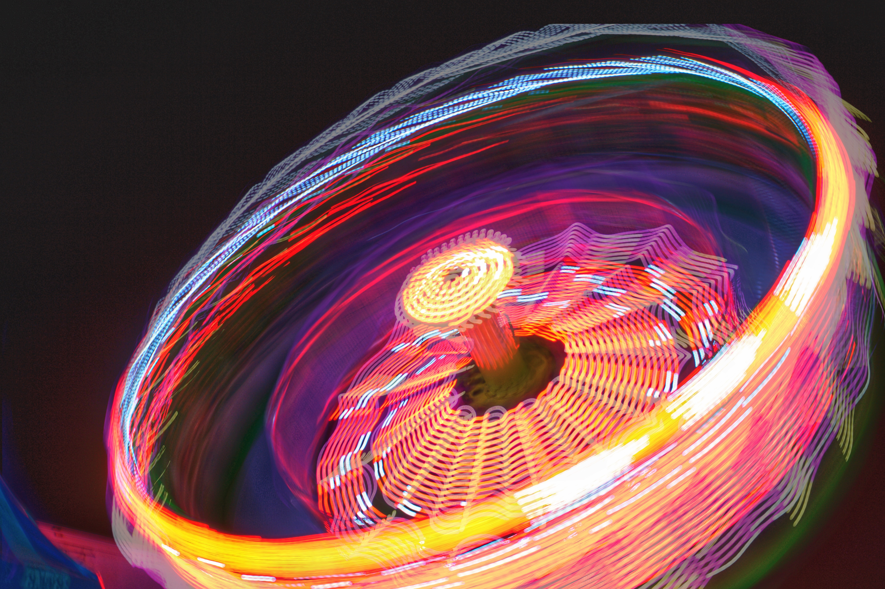

Long exposure photography
Long-exposure, time-exposure, or slow-shutter photography involves using a long-duration shutter speed to sharply capture the stationary elements of images while blurring, smearing, or obscuring the moving elements. Long-exposure photography captures one element that conventional photography does not: an extended period of time. The paths of bright moving objects become clearly visible—clouds form broad bands, vehicle lights draw bright streaks, stars leave trails in the sky, and water waves appear smooth. Only bright objects leave visible trails, whereas dark objects usually disappear. Boats in long exposures disappear during the daytime, but draw bright trails from their lights at night.